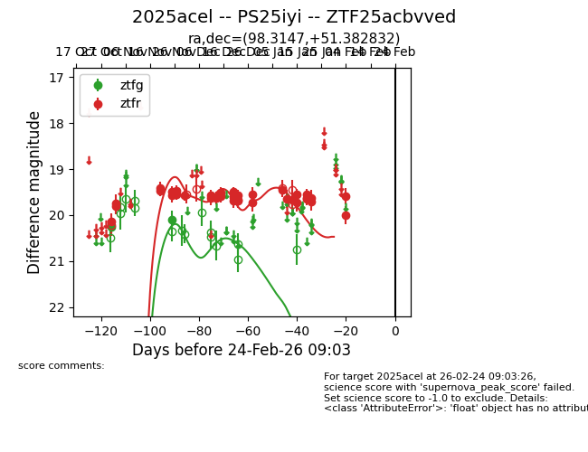
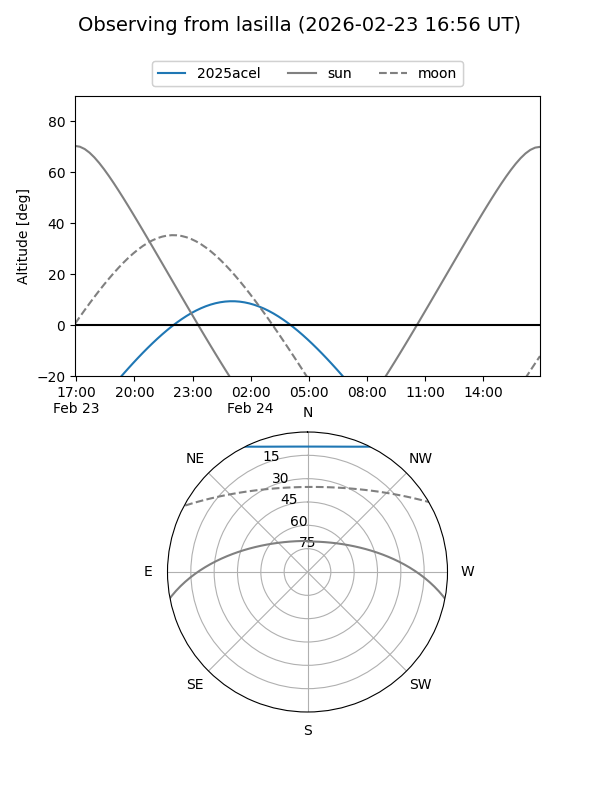
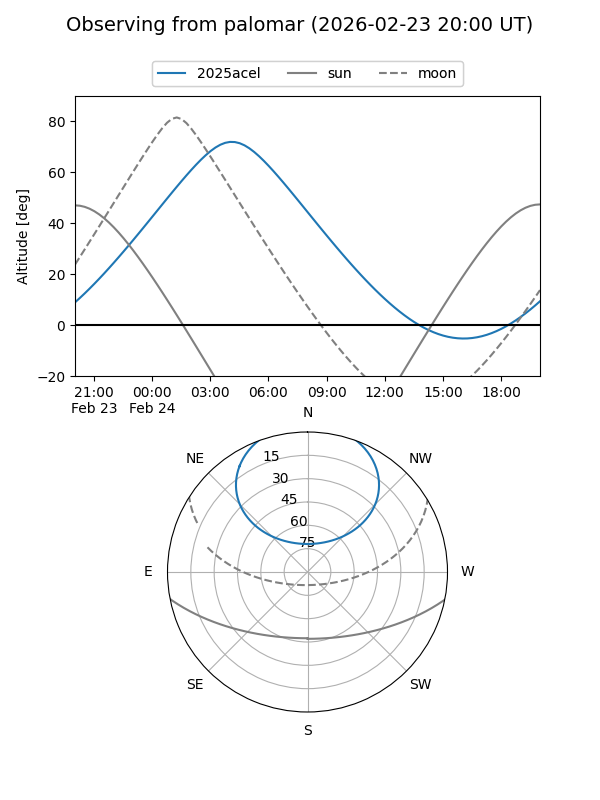
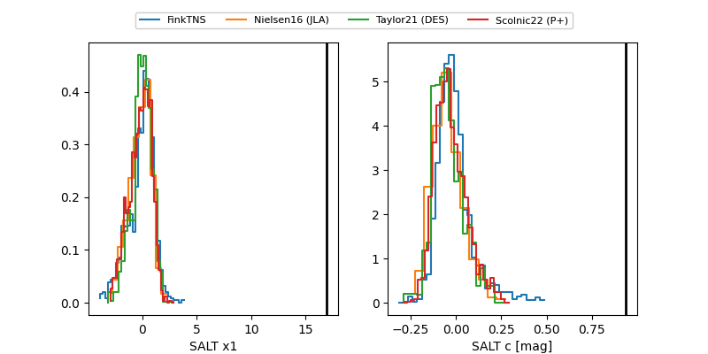

2025acel
Target 2025acel at 2026-01-15 09:45
Aliases and brokers:
FINK: link
Lasair: link
ALeRCE: link
TNS: link
YSE: link
alt names
ZTF25acbvved (ztf,fink_ztf)
2025acel (tns,yse)
PS25iyi (panstarrs)
Coordinates:
equatorial (ra, dec) = 98.3147,+51.38283
equatorial (HMS+DMS) = 06:33:15.53,+51:22:58.20
galactic (l, b) = (163.8439,+18.19562)
Flags:
Photometry:
last ztfg=20.10, ztfr=19.55
2 ztfg, 28 ztfr detections
Lightcurve

Visibility


Additional plots
